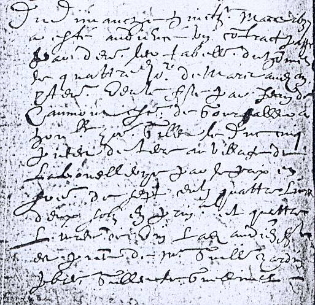
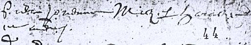
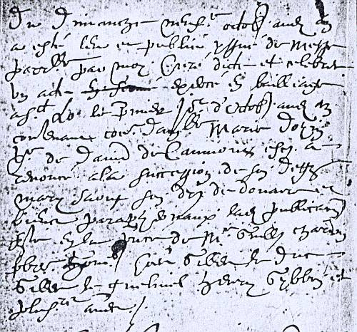

DOCUMENTS NOTARIAUX DOCUMENTS NOTARIAUX
DOCUMENTS NOTARIAUX DOCUMENTS NOTARIAUX
NOTARIAT DE GOURFALEUR
Référence : 5E 1256 notariat Gourfaleur (Canisy)
Provenance : Archives Départementales de
la Manche, Claudine Harache
Après le 21 mars 1621, suite au
décès de Anne de CAUMOND,
il est question de Mathieu LEBAS, époux d'Anne de CAUMOND (mariée en secondes noces à
Guillaume PAIN d'où au moins un enfant). Elle est sœur de Jean de CAUMOND. Il y est aussi question de Charles de CAUMOND escuier sieur de la Chaslonnière.
Référence : 5E 17258 registre de tabellionnage
du Hommet n° 667
Provenance : Archives Départementales
de la Manche, Claudine Harache
Le 14 octobre 1608 à Saint Pierre
d'Arthenay, Jean de
Caumond escuier demeurant à
There vend à Guillaume
de Caumont escuier son frère
de Gourfaleur une pièce de terre scize à Esglandes
nommée le petit camp du Chesne ...
Le même jour 14 octobre 1608, Guillaume de Caumond escuyer de Gourfaleur vend à Jean de Caumond son frère 4 vergées de terre
plantées en pommiers et poiriers et une maison dessus scize
à Gourfaleur ...
Référence : 5Mi 1371 Saint-Pierre-d'Arthenay
Provenance : Archives Départementales de la Manche (avec l'aide de Claudine Harache)
|
|
  |
BAILLIAGE ET NOTARIAT DE SAINT-LÔ
Référence : 5Mi 1371 Saint-Pierre-d'Arthenay
Provenance : Archives Départementales de la Manche (avec l'aide de Claudine Harache)
|
|
 |
Référence : 5E10091
Provenance : Archives Départementales de la Manche via Alain Leboidre
Contrat de mariage devant Me
Joachim Girard et son confrère, notaires royaux à
Saint-Lo, entre Jean François De Caumont,
cultivateur, fils majeur de Jean Jacques Lo
et de Jeanne Feron, né et domicilié en la commune de
Graignes, veuf en premières noces avec trois enfants vivant de
Julie Lalonde, d'une part, et Charlotte Françoise Douville,
cultivatrice, native de la comunne de Villiers Fossard, demeurant en
celle du Dezert, fille majeure du Sr Jean Baptiste Gilles René
Noel Douville, laboureur, et Anne Jacqueline Tostain, son
épouse, domiciliés en la dite commune du Dezert. En
présence et du consentement du père du futur
époux, des sieurs Hugues Bayeux et Auguste Louis Thomasse ses
beaux frères, des père et mère de la future
épouse, et de Madame Veuve Giffard, fille de son parrain. Fait
et passé à Saint-Lo le 22-12-1815.
Signatures de Caumont, de Caumont, C Douville, J Douville, Anne
Tostain, Thomasse, H Bayeux, Lecuyer veuve Giffard.
Référence : 5E 2479, notariat de Coutances
Provenance : Archives Départementales
de la Manche
Le 21-01-1667
Référence : 5E 2451, notariat de Coutances
Provenance : Archives Départementales
de la Manche
Du
Trent[iem]e jour d'octobre mil six centz cinquante et neuf à
Coustan[ces] devant les tabellions
Pour
les pactions du mariage qui soubz le bon
plaisir de dieu sera faict et célébré en la
S[ain]te
Eglise Catholique ap[osto]lique et Romaine entre Me francois
Lebas fils unique et seul héritier de feu
Me Pierre lebas de la parroisse de Gourfalleur et
damoiselle judith de Caumont ses pere et
mere
d'une part et damoiselle Marie du Hamel fille
de Louis du hamel esc[uye]r Seigneur et patron de la p[arroi]sse
de Saulcey et du Plessis Gentil homme ? de
la maison du roy et dam[oise]lle Anne le Campion
[...]
faict
en la pnce de Noble et discrete personne
Jean le Campion pbre archidiacre et chanoine [en]
L'Eglise Cathedrale de Coustances Oncle mat[ernel]
de lad fille lequel [...]
a donné le nombre de Cinq[uan]te livres de rente
à prendre et avoir sur Me Robert le Ro...
Sr de la Vallette Con[seille]r et secret[air]e du roy
[...]
fait en
la p[rese]nce de discrete personne Me
Melchior lebas pbre curé de la parr de St Lo
d'Ourville oncle paternel lequel a vu le
presque Mariage agréable et recongnu que led
francois lebas est son seul et présomptif heritier
[...]
presents
Me Jean Baptiste de Caumont pbre
chanoine en lad eglise cathedrale de Coustances
de Guillaume L'Escuyer advocat au parlement de
paris Son oncle Maternel estant de present en ce
lieu, honorable homme Me Jean ?
Sr du Mesnil St Jean, discrete personne Me Jacques
de V... pbre, Pierre Le Rossignol escr, chapelain en
lad Eglise Cathed[rale] de Coustances, Me Nicolas
hebert con[seiller] du Roy eleu en l'Election de Coustances beau frere
de lad future espouse et plus[ieurs] au[tres]
signatures de Lebas, Lebas, de Caumont, Marie du Hamel, du Hamel, Anne Campion, Rossignol, Hebert
Référence : 5E 2310 et 2 Mi 178, Fonds Michel Le
Pesant, copie du tabellionage de Coutances, 1455-1575
Provenance : Archives Départementales
de la Manche
Lien
vers la transcription de l'acte concernant la vente du fief de
Gourfaleur à Jean de Caumont en 1456 et lien
vers l'acte
A tous
ceulx qui ces presentes lettres verront Richart Guyhomar, lieutenant
general de noble homme Ondet d'Aidie, escuier, d'escuirie du roy nostre
sire et son bailli de Costentin, salut. Comme desja pieça
Bidault de Gourphaleur, escuier, tant en son nom que en nom de Jehan de
Gourphaleur, son père, eust obtenu certaines lettres de
imprectacion pour et a fin de adnuller certain contrault fait par led.
Jehan de Gourphaleur avecquez Jehan
de Caumont, escuier, l'ainsné, de la vendition du fief,
terre et seigneurie dud lieu de Gourphaleur, lesquelles lettres de
impetracion eussent esté debatues de surrecpcions et orrepcions
disant par led Caumont
que icelles estaient incivilles et desraisonnables et aussi damoiselle
Marie de Verson se fust clamée dud. Jehan de Caumont pour avoir
tel douere comme selon raison et la coustume du pays il lui povait
compecter et appartenir par le trespas de feu Guillaume de Gourphaleur,
son mary, sur quoy ilz eussent longuement procédé aux
assises de Coustances et eust esté verre assise et rassise par
plusieurs foiz et fussent en voie de avoir grant et somptieux
procés, pour fuir et eviter auquel en la parfin Savoir faisons
que es assises tenues aud. lieu de Coustances par nous lieutenant
dessus nommé le vendredi viie jour de may continuacion des
autrez jours precedens desd. assises l'an mil iiiic cinquante six
furent presens ledit Jehan de
Caumont, d'une part et Colin Riquier, conduit et meneur par
decret et auctarité de justice dud. Jehan de Gourphaleur, led.
Bidault et Jehan de Gourphaleur, actourné de lad. damoiselle,
d'autre part, lesquels tant sur le fait dud. douaire que lad.
impectracion obtenue pour annuller lad. vendicion dud. lieu, terre et
seigneurie par le conseil de plusieurs des conseuls, parens et amis
tant dud. Jehan de Gourphaleur en nom duquel lad. impectracion avoit
esté obtenue que de lad. veufve, desquels parens et amis les
noms et surnoms sont escrips en la fin de ces presentes confesserent
avoir appoinctié entre eulx ainsi qu'il ensuit, c'est assavoir
que led. meneur dud. Jehan de Gourphaleur l'ainsné et led.
Bidault filz ainsné dud. Jehan de Gourphaleur, son pere, en son
nom, renonchierent a lad. impectracion ainsi obtenue pour ce dit est et
d'icelle firent amende a justice et aussi led. actourné de lad.
veufve renunça, quicta et transporté aud. de Caumont tout
et tel douaire comme sa dicte maistresse sa mère povoit avoir et
demander sans ce que passés soit pour le temps passé,
present ou advenir elle y puisse quelque chose callengier ne demander,
mais voulurent, consentirent et acorderent que led. de Caumont, ses hoirs ou ayans
cause dud. fieu et de ces appartenences et ependences joissent et
possedent affin et a perpetuel heritage au droit et par le moyen du
conquest par lui fait d'icellui fieu, icellui meneurr par le conseil
desd. amys et aussy led. Bindault confessa que icelle vente avoit estey
faicte licitement et raisonablement et fut ce fait moyennant et parmy
ce que led. Jehan de Caumont
pour fuir et eviter a procés, sa saisine et deffence tenante,
bailla, quicta, ceda et delessa et par ces presentes, baille, quicte,
cede et delesse tant a ladicte damoiselle, ses hoirs ou ayans cause
affin et perpetuel heritage ung hostel et heritage sytué et
assis en ladicte parroisse de Gourphalour tel et ainsy comme il se
pourporte qui furent au Turq sans riens y retenir ne exepter en aucune
maniere, lesquieulx heritages led. de Caumont avoit puis
nageures acquis des heritiers dud. Turq ainsi qu'il appert par les
lettres dud. conquest que led. de
Caumont bailla presentement et iceulx promis garantir et
acquicter de toutes rentes et charges quelxconquez vers tous et contre
tous sauf et exepté le pourport de fieu et drois seigneuriaux et
par ce aussi que ledit de
Caumont donné et poir presentement contant tant aud.
meneur dud. Jehan de Gourphalour l'ainsné que dud. Bindault la
somme de vingt escuz d'or pour se paines et missions qu'ilz avoient euz
a cause dud. procés et de qui s'en est enssuy et vingt escuz en
la volenté et ordonnance de Leonard Malenffant, Nicolas le Sage
et nous en nostre non privez pour obvier a ses constages et sa saesine
et defence tenante, comme dit est. Enssuivent les nomps et sournomps
desd. conseux, parens et amis, c'est assavoir Guillaume le Coq, Robert
Adam, Colin Lasquetier, Jehan Varon, Guillaume Mondet, Guillemin le
Fevre, Guillemin Ade, Pierres Potier, Guillaume de Hambye, Guillaume
Broc, Jehan d'Anneville, Colin Typhaigne, Denis Cadot, Jehan le Sage,
Robin Passemer, Jehan le Chien, maistre Pierre Chollet, Jehan Massieu,
Thomin Hebert, Robin d'Auxeis, Colin Alain, Guillaume le Moyne, Noel le
Muey, Jehan le Cesne, Jehan Felice, Nicolas le Sage et Guillaume. Item
enssuit la teneur tant dud. menement que de la dicte actournée.
Et premierement dud. menement. A tous ceulx qui ces presentes lettres
verront Jehan Boudier, lieutenant commis en bailliage de Costentin, de
hault et puissant seigneur Jehan, sire de Montauban et de Landal,
chevallier, conseillier et chambellan du roy nostre sire et son bailli
de Costentin et commissaire en ceste partie de nos tres honnouré
et doubtés seigneurs nos seigneurs les gens du conseil du roy
nostre seigneur a present estans en Normendie, salut. Savoir faisons
que aujourdhuy tiers jours de juing l'an mil iiiic liiii et l'auditoire
du roy nostre sire a Coustances se presenta devant nous Bindault de
Gourphalour, escuier, filz et heritier ainsney de Jehan de Gourphalour,
escuier, porteur de certaines [lettres] par lui et les aultrez parens
et amys dud. Jehan de Gourphalour obtenues de nosd. seigneurs du
conseil et de l'execucion d'icelles donnée de nos, ausquelles de
ces presentes sont annexes lequel Bindault nous requist que nous
voulsissions jurer et exprimer pluseurs des prouchains parens et amys
dud. Jehan de Gourphaleur sur savoir se icellui de Gourphaleur estoit
personnne ydiote et debillitey de ses cens et entendement en telle
maniere qu'il soit inabille de gouverner soy et ses choses affin que se
aussi estoit trouvé de lui pourvoier de tuteur et curateur ansi
que faire se doibt selon la coustume du pays et conmandé estoit
par nosd. seigneurs, desqueux parens et amys venus par l'adjournement
et ordonnance de justice et prins en jugement desquieux les nomps
enssuivent, c'est assavoir Guillaume Syron, Colin Riquier, Robin
Passemer escuiers, Colin Perrote, Jeahn le Chevallier, Jehan des
Coeuvres, Colin de la Fosse, Richart le Saulnier, Robin le Mesnagier,
Phelipin le Causays, Robin le Bas, Guillemin le Crosnier, Guillemin le
Crosnier (sic), Jeahn Ogier, Pierres l'Engloys, Thomin le Dentu, Jehan
Mabire, Jehennet le Dentu, Denis Fleuret, Robert Adam, Guillaume Ade,
Guillemin Hue, et Pierres Potier, lesquels par nous jurés
deuement de raporter sur ce que dit est nous distrent et rapporterent
tous accordablement qu'ilz avoient congneu et congnoissent de longtemps
led. Jehan de Gourphalour, l'estat de sa vie et gouvernement et qu'ils
avoient esté et encoires est de present homme et digne
incenssé et de debillité de cens et d'entendement,
inhabille devant le gouvernement d'aucunes ces choses et estoit recquis
et chose necessaire de lui pourvoier de tuteur et curateur, on y lequel
tesmoing et rapport et par l'oppinion et conseil de pluseurs sages
coustumiers estans a ladicte court nous iceulx parens et amys feysmes
derechief jurer que bien justement et loyaulment a leurs advis et
consciences ilz eslinroient ung teüteur et curateur a icelluy de
Gourphaleur pour lui, ces choses, causes et querelles besognes et
affares menes ou a mouvoir garder, gouverner, traitier, pourssuir et
deffendre vers toutes personnes ainsi et selon ce qu'il appartendra et
faire se doilt
fol 61 v° selon la coustume du pays et apres qu'ilz se furent
conseilliés ensemble a grande et meüre deliberacion noous
rapporterent acordablement que led. Colin Riquier, escuier, qui present
estoit, estoit le milleur et le plus prouffitbale qu'ilz y seroient
eslinre, veu lequel rapport nous icellui Riquier instituasmes tuteur et
curateur d'icellui Jehan de Gourphaleur pour faire et complir tout ce
que dessus est dit et de bien et deuement se gouverner et emploier de
lui reçeusmes le serment au can appartenant Sy donnons en
mandement et commission se mestier est, a chacun des sergens dud.
bailliage que led. Riquier ilz facent, seuffrent et lessent jouir ainsi
qu'il appartient selon lad. coustume du pais et promist et jura led.
Riquier que bien justement et loyanment il s'i gouvernera et qu'il ne
transportera, vendra, alienera en aucune maniere aucuns des heritages
d'icellui Jehan ne n'en fera quelque traictié, composicion,
marchié ne appoinctement a aucune personne synon par
auctorité et en presence de justice et par le consiel et
oppinion des parens et amis dud. Jehan de Gourphaleur et de son
entremise rendra bon compte et loyal en lieu et temps quant il
appartendra. Donné pour tesmoing de ce soubz le seel donc nous
usons aud. office de lieutenant en l'an et jour precedens desousd.
ainsi digné G. Hue. Item ensuit la teneur de lad.
actournée : L'an mil iiiic liiii le xe jour de novembre a
Coustances devant nous Robert Adam, lieutenant general de Jehan
Croixante, viconte dud. lieu, fut presence damoiselle Marie de Verson,
veufve de feu Guillaume de Gourphaleur, Olivier Adam, Jehan le
Cappelain, Michiel Colibert, Jehan d'Arou, eulx et chacun d'eulx a
querelle ou querelles mene ou menez et a tout ce qu'elle a et peult
avoir a faire et a besoignier vers et a l'encontre de Jehan de Caumont escuier.
Donné comme dessus. Ainsi signé : Adam. A ce present et
appelé Estienne Jourdan, tabellion du roy nostre sire aud. lieu
de Coustances, devant lequel o le congié de justice pour polus
grande seurté icelles parties de leur grey, plaisir et
volenté le ractiffierent par le conseil que dessus cest present
appoinctement et icellui ourent agreable sans jamais alle a l'encontre.
Pour tesmoing desquelles choses nous advons scellé ces presentes
de nostre seel donc nous usons aud. office de lieutenant et pour
grigneur aprobacion et congnoissance y advons fait mectre le seel des
obligacions de la viconté de Coustances en l'an, jour et assises
dessusd.
Dictionnaire du Moyen
Français :
- conseux pour conseils
- menement : Action de conduire (au propre ou au fig.), en partic.
"Conduite et surveillance administrative (p. ex. d'un marché)"
- impectracion pour impétration : Obtention de qqc. (d'une
faveur, d'un privilège...) à la suite d'une
requête, accord de l'autorité compétente pour
l'obtention de qqc.
- surrecpcion pour subreption : Obtention d'un acte sur un faux
exposé, et par extension, Tromperie, fraude (souvent par
surprise)
- orrepcion pour obreption : Fait d'obtenir une grâce, un
privilège, etc., en cachant sciemment un fait qui aurait
dû être exposé
Référence : 5E 1412
Provenance : Archives Départementales
de la Manche, via Jean-Pierre Guilloux et Alain
Leboidre
- nourriture : en Normandie, jeune
bétail qu'on élève et auquel on donne de la nourture (Dictionnaire du Monde
Rural, les mots du passé ; Marcel Lachiver ; Fayard, 1997)
- doublier : en Picardie, en Normandie, nappe, touaille, essuie-mains
(Dictionnaire du Monde Rural, les mots du passé ; Marcel
Lachiver ; Fayard, 1997)
Référence : 5E 1476
Provenance : Archives Départementales
de la Manche, Claudine Harache
19 janvier 1671
Vente par Pierre le Sauvage, prêtre de Graignes à Robert Vaultier de scillons de terre scitues au Bas Vernay ... qu'il avait acheté à Jean de Caumont par acte du dernier janvier dernier.
Le 14 juin 1694, reconnaissance d'un contrat de mariage entre :
Pierre Vaultier fils François et de Marguerite de Caumont de la parroisse de Grengne et de present demeurant en celle dauxais
et Ollive Le Tenneur fille de Jacques et de Louise Letenneur dauxais.
Présence de Ollivier et Louis Vaultier frères dudit futur.
Le 25 février 1697, reconnaissance d'un contrat de mariage fait le 15 février 1697 entre :
Louis Vaultier fils de François et Marguerite de Caumont, de Graignes, mais habitant Auxais et Marguerite Dorléans, d'Auxais.
Le 8 mai 1702, reconnaissance d'un contrat de mariage fait le 23 février 1702 entre :
Jean Lescuyer fils de feu Thomas et d'Agathe Philippe
et Anne Lecanu fille de Jean et de Françoise de Caumont
(pas de lieu mentionné, mais présence du prêtre de Saint-André-de-Bohon). Parmi les témoins : Nicollas Le Canu et Philippe frère de la ditte, Guillaume Lereculé, oncle, Adrien Vaultier, oncle, Jacques de Caumont
Le 22-01-1763, contrat de mariage entre
Jacques Folliot et Marie Anne de Bayeux :
Référence : 8E 2285
Provenance : Revue Généalogique
Normande n°10, p. 101, Jean-Yves Laillier
14-10-1592
Enregistrement contrat de mariage du 21-06-1590 entre Bertrand
LEFEBVRE, sieur du Mauris (?), de Cairon, et demoiselle Geneviève de CAUMONT,
fille de noble homme Jacques,
sieur du lieu et du Tremblé, et de demoiselle Claude LESUEUR
23-11-1592
Contrat de mariage entre noble homme Pierre de CAUMONT, sieur de
Nonetot, procureur du roi au siège présidial et baillage
de Caen, fils de noble homme Jacques,
et de Claude LESUEUR, et demoiselle Jeanne de MAINGEVILLE, fille de feu
noble homme Jacques, sieur de Cornières et Fresney, et de
demoiselle Marie de MARGUERIE
Référence : 5E 13314
Provenance : Archives Départementales
de la Manche
31-03-1621
honorable homme Henry Auber de Sainte-Suzanne-sur-Vire fils et
héritier avec Robert Auber son frère de défunt
honorable homme Jean Auber leur père et Jeanne Lebas femme dud
Henry par lui autorisée vendent à Me Jacques de Pierre
escuyer sieur de Pierre, avocat au siège présidial de
Coutances, 30 livres de rente hypothèque, à prendre sur
Mathieu, Jean et Jean Lebas frères de lad femme et Jeanne Dohin
leur mère, veuve de Pierre Lebas, père desdits Mathieu,
Jean et Jean Lebas selon le traité de mariage fait entre
défunt Jacques de
Caumont vivant
escuyer et lad Lebas qu'il épousa en premier mariage et lad
Jeanne Dohin mère desdits Lebas laquelle par l'advis des parents
dudit Pierre Lebas et d'elle qui ont donné lesd 30 livres de
rente en dot hérédital à la dite fille selon qu'il
est fait mention dans le traité de mariage fait entre led Auber
et femme le 17-02-1609, et iceluy traité fait avec led de Caumont
du 01-07-1605 et reconnu au siège de viconté de
Saint-Lô par lad Jeanne Dohin et Mathieu Lebas son fils
aîné, et ce fut fait la vente par le prix et somme de 300
livres ...